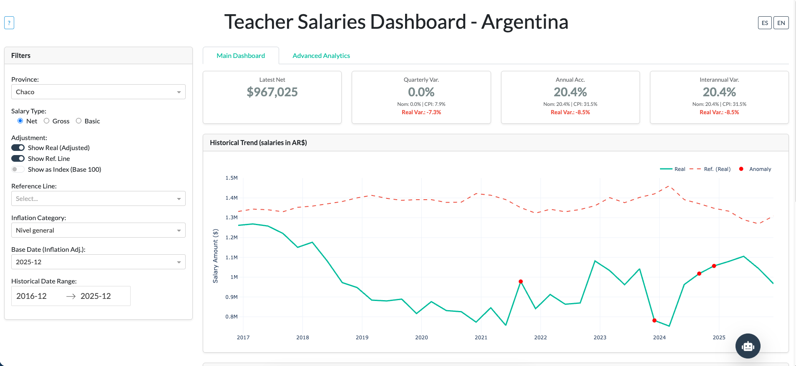
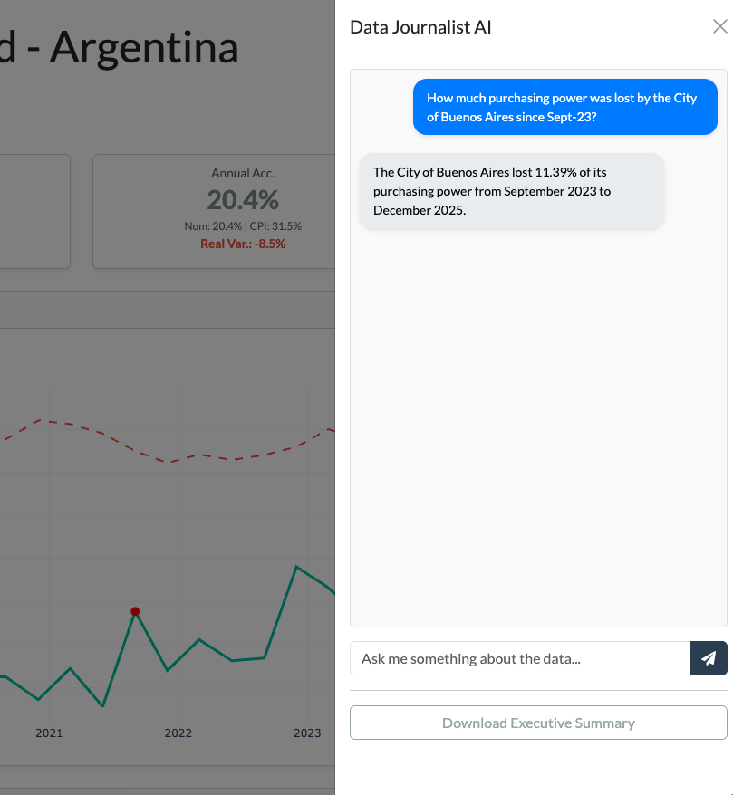
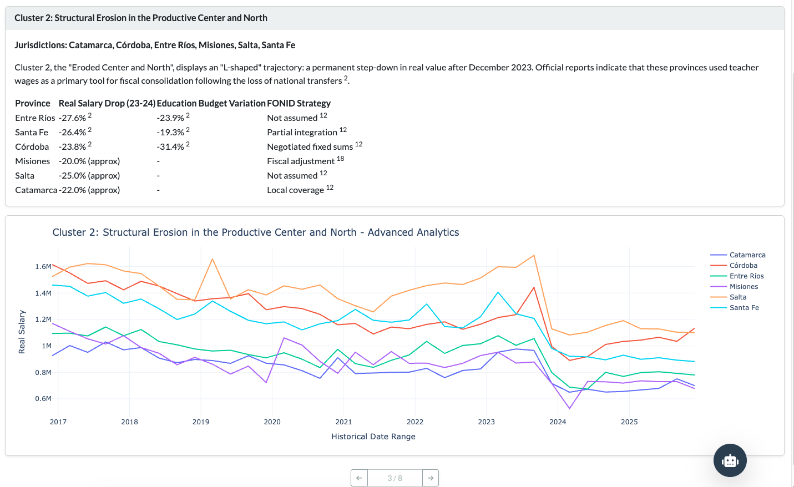

Teacher Salary Analytics Dashboard
Interactive visualization of Argentina's teacher salary data
Overview
An interactive web application built with Dash to visualize and analyze teacher salary data (category MG10) across Argentina's 24 jurisdictions.
Features dynamic inflation adjustment, enabling real-time comparison of purchasing power across provinces and time periods. Provincial benchmarking allows users to understand relative compensation and identify disparities.
This project demonstrates expertise in building data-driven applications that translate complex fiscal data into actionable insights—a skill honed during my time as a government policy advisor.
Key Features
- Inflation Adjustment: Salaries are adjusted for inflation using the Consumer Price Index (CPI) from INDEC, allowing for accurate comparisons of real wages over time.
- Provincial Benchmarking: Users can compare salaries across all 24 jurisdictions, identifying trends and disparities in teacher compensation.
- Interactive Visualizations: The dashboard includes line charts for historical comparison against poverty lines and bar graphs for comparisons between jurisdictions.
- Advanced Analytics and ML: The application incorporates machine learning to cluster similar jurisdictions through KShape and IsolationForest for anomaly detection in salary trends.
Tech Stack
Python
Plotly Dash
scikit-learn
LangChain
LiteLLM
AWS Lambda
AWS ECR
MLflow
Gallery


